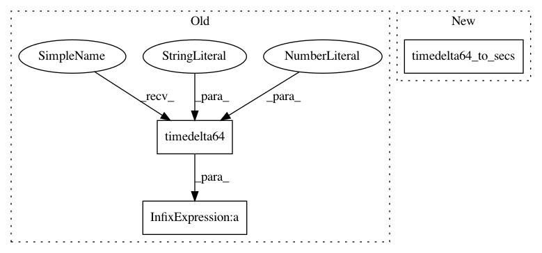

0423b1303856c26106c44c1b9957fdabe0867ff9,nilmtk/stats/electricity/single.py,,energy,#,314
Before Change
if max_sample_period is not None:
timedelta = np.where(timedelta > max_sample_period,
max_sample_period, timedelta)
timedelta_secs = timedelta / np.timedelta64(1, "s") // convert to seconds
joules = (timedelta_secs * series.values[:-1]).sum()
if unit == "kwh":
After Change
series = series.icol(0)
timedelta = np.diff(series.index.values)
timedelta_secs = timedelta64_to_secs(timedelta)
joules = (timedelta_secs * series.values[:-1]).sum()
if unit == "kwh":
JOULES_PER_KWH = 3600000
In pattern: SUPERPATTERN
Frequency: 3
Non-data size: 3
Instances
Project Name: nilmtk/nilmtk
Commit Name: 0423b1303856c26106c44c1b9957fdabe0867ff9
Time: 2014-01-09
Author: jack-list@xlk.org.uk
File Name: nilmtk/stats/electricity/single.py
Class Name:
Method Name: energy
Project Name: nilmtk/nilmtk
Commit Name: bd17edac6a1b18efbd9bb7a1398734a815955bc2
Time: 2014-01-09
Author: jack-list@xlk.org.uk
File Name: nilmtk/stats/electricity/single.py
Class Name:
Method Name: get_gap_starts_and_gap_ends
Project Name: nilmtk/nilmtk
Commit Name: bd17edac6a1b18efbd9bb7a1398734a815955bc2
Time: 2014-01-09
Author: jack-list@xlk.org.uk
File Name: nilmtk/stats/electricity/single.py
Class Name:
Method Name: hours_on